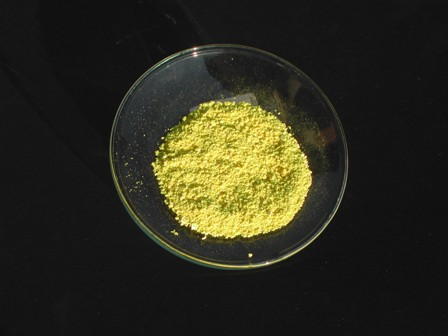

Ancora un quadro? Ma non siamo in Chimica sperimentale?
Sì, ma la "chimica sperimentale" langue di questi tempi, non solo su questo blog... e poi i quadri mi piacciono particolarmente.
Se guardo i fuochi artificiali, ci vedo il bravo pirotecnico che mescola sali di bario, di stronzio, nitrati e perclorati; allo stesso modo se osservo le pennellate di un quadro (antico) con un po' di fantasia immagino le conversazioni del pittore col vecchio artigiano, mezzo chimico e mezzo alchimista, armato di forno, mortaio e tanta esperienza:
-"...solo tu mi sai fare quel Giallo di Napoli come io lo voglio..."- mi sembra di sentir dire, mentre il vecchio colorista pensa a quel bel lotto di ossido di stagno che ha appena ricevuto dalla Cornovaglia e che sposerà in onore del pittore coll'ossido di piombo...
Naturalmente parlo di quegli artisti che hanno superato il fondamentalissimo test del tempo e le cui opere stanno ora appese alle pareti dei musei.
(Ci sono oggetti nei musei che pur avendo superato il test fanno "oggettivamente" schifo, ma sono per fortuna poco numerosi).
Se si ha la grande fortuna di vedere i quadri di persona fin da giovani, è probabile che attecchisca il germe della sensibilità verso quest'arte, del piacere verso un capolavoro che durerà poi per sempre.
Provate ad immaginare una bella fotografia de "Il Giardino delle delizie" di Bosch ed essere invece a due metri di distanza dall'originale...
Nel primo caso dopo un attimo si gira pagina, nel secondo vien voglia di fermare il tempo e star lì a contemplare ogni particolare.
Naturalmente è solo un esempio fra gli infiniti possibili, in funzione delle diversissime predilezioni personali.
Se per caso sei un giovane che legge qui e pensi che ti possano piacere i quadri famosi, credimi sulla parola e appena puoi vai a vederli di persona.
Ma comincia con i capolavori! Le crostacce senza valore lasciale perdere, altrimenti il germe anzichè svilupparsi verrà disattivato sul nascere.
...°°°OOO°°°...
Nel mio saltuario giocherellare con i pigmenti storici, l'ultima volta avevo provato a fare il violetto di cobalto (fosfato di cobalto), mentre oggi vado a pasticciare con quel bel giallo che Gauguin si sa usò per il vestito di questa ragazza:

Breton Woman in Prayer (1894)
Si tratta del pigmento detto "Giallo limone", originalmente costituito dai cromati di bario e stronzio (BaCrO4, SrCrO4).
I cromati metallici insolubili sono stati usati fino ad alcuni decenni fa, fino a quando la sensibilità verso l'impiego di sostanze meno tossiche ha preso il sopravvento.
I cromati contengono naturalmente il cromo esavalente, che non è certo un campione di salubrità... ma tant'è, si sono usati per un secolo e mezzo e tanto basta.
Il cromato più famoso è certamente quello di piombo (Giallo cromo, PbCrO4), che è di un bellissimo giallo oro, caldo e brillante.
I cromati di bario e stronzio sono abbastanza simili, ma con tonalità diverse: molto limone e molto freddo il primo, sempre chiaro ma più caldo il secondo.
Ne ho preparato una piccola quantità di tutti e due nelle medesime condizioni, proprio per confrontarne le differenze.
Da come posso vedere, per la signorina bretone (che non ho avuto il piacere di osservare dal vero...) confermerei che Gauguin abbia usato in questo caso proprio il cromato di stronzio; la tonalità mi sembra veramente troppo poco "limone" per essere cromato di bario.
Che Paul abbia mescolato addirittura anche un po' di Giallo cromo? Sembrerebbe di sì, ma facciamo finta di niente ed andiamo a vedere il "mio" Giallo limone.
Ho mescolato, a pH neutro ed in quantità stechiometriche, una soluzione di cromato di potassio K2CrO4 ed una di nitrato di stronzio Sr(NO3)2, ottenendo il precipitato giallo di cromato di stronzio SrCrO4.
Precipitato che ho filtrato, lavato, essicato, eccetera, ottenendo la polverina che si vede qui sotto e che è il pigmento puro che in altri tempi avrebbero chiamato propriamente "Giallo limone".

Mettendoci dentro anche del bario, ad libitum, i limoni da maturi passerebbero ad acerbi, e viceversa.
Nell'ottocento questo pigmento lo si sarebbe ottenuto più o meno nella mia identica maniera e quindi mi illudo che sarebbe piaciuto pure al nostro Gauguin, che certo non lesinava nei colori vivaci e nel giallo in particolare.
1 commenti